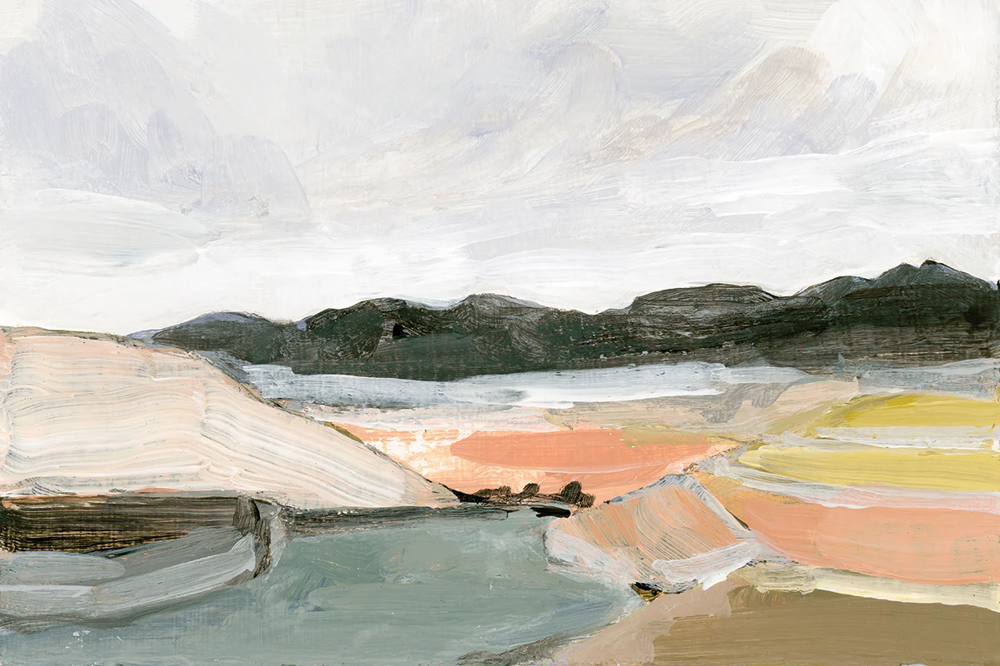

Festményvilág
Piactér műkedvelőknek és művészeknek
A projektről
A Festményvilág eredetileg a záródolgozatomhoz készült, ahol a cél a tanult módszerek mélyítése és a Spring Boot backend megvalósítása volt.
Továbbfejlesztés és tesztelés
2025 januárjától tesztelőként dolgozom: manuális teszteléstől indulva mára Cypress keretrendszerben írok automata teszteket. A projektet azért élesztettem újjá, hogy tesztekkel kiegészítve szakmai portfólióként szolgálhasson.
Kódrefaktor és új funkciók
A tesztek írása közben kiderült, hogy az alkalmazáskód refaktorálásra szorul, ezért egy kedves fejlesztő barátommal átdolgoztuk a mögöttes alkalmazáslogikát, és új funkciókkal bővítettük az oldalt.
Harsányi Zsófia, Vedres Dávid Armand
